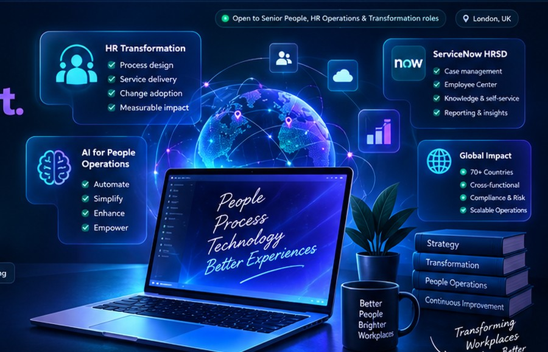
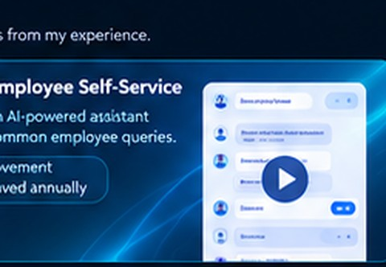
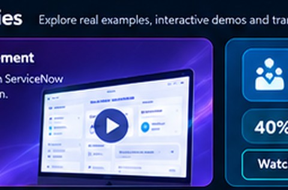
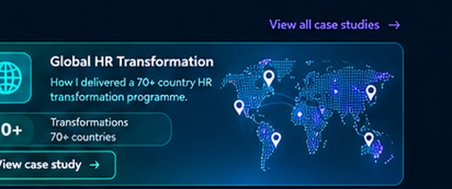

•••
0+Years of Experience
HR People Consultant and People Operations transformation professional with 8+ years across HR, legal, compliance and employee-service operations. I help organisations design, digitise and scale people services using data, process excellence and AI-enabled solutions.

ABOUT
Evolved from process consultant → techno-functional lead → implementation specialist.
I work at the intersection of people operations, service design and enterprise technology. My experience spans HR, legal, compliance, workplace/facilities, IT, Finance and Audit operations, with delivery across EMEA, North America, Latin America and APAC.
My role is often the bridge between business stakeholders, Product Owners, senior leaders and technical teams: diagnosing current-state pain points, translating priorities into scalable future-state processes, and maintaining the governance needed to take transformation through build, testing, readiness and adoption.
Converted into validated requirements, solution options, backlogs and transformation roadmaps.
Global programme scope across multiple HR workstreams and integration dependencies.
KEY SKILLS & EXPERTISE
Onboarding, employee requests, case management, knowledge and self-service, end to end.
HRSD, Employee Center, EmployeeWorks, Employee Slate, ITSM and CSM delivery.
ServiceNow Agentic AI certification, conversational intake and AI-enabled service design.
Current-state to future-state mapping, workflow design and service catalogue structures.
Integration dependency coordination and go-live readiness across global programmes.
Stakeholder alignment, training, SOPs, readiness and post-go-live hypercare.
RAID governance, escalation paths, approvals and legal/compliance workflows.
KPI, performance, adoption and risk reporting; operational dashboards.
LIVE DEMOS & CASE STUDIES
Global HR transformation is based on delivered work. AI pages are clearly labelled as capability concepts where production metrics are not yet verified.
70+ countries, 5+ workstreams and 10+ integrations — aligning Talent, Rewards, Mobility, Payroll and Legal into scalable HR service design.
How a knowledge-grounded assistant could answer RSU, bonus and benefits questions before a case reaches HR.

Country-aware support for tax equalisation, visa status and relocation policy, with human escalation for exceptions.
Real-time answers for payslip and deduction queries, with clear privacy boundaries between general policy and personal data.

Turn scattered prior chats, emails and case notes into one concise brief so an HR agent can start with context.
Move beyond answering questions toward completing routine HR actions when policy, balance and approval conditions are met.
EXPERIENCE
Evolved from process consultant → techno-functional lead → implementation specialist.
Process Consultant → Solution Delivery → Techno-Functional Lead → Implementation Specialist
Lead end-to-end HR service transformation within a 5+ workstream programme spanning 70+ countries and 10+ integrations.
Led people-service and enterprise workflow transformation across HR, Legal, IT, Audit and Finance.
Delivered workflow and case-management transformation across five operational functions: HR, Facilities, Legal, Compliance and IT.
Replaced manual HR, legal and compliance processes with structured workflows, forms, approvals and dashboards.
TOOLS I WORK WITH
HRSD, Employee Center, EmployeeWorks, Employee Slate, ITSM and CSM.
Integration dependency coordination, business readiness and go-live alignment.
Collaboration, documentation and stakeholder enablement.
Workflow support, process documentation and service transparency.
Workflow automation across HR, Legal, IT, Finance and Audit operations.
KPI, performance, adoption and risk reporting.
Stakeholder communication, training and delivery collaboration.
Backlog prioritisation, UAT, defect triage and iterative releases.
ServiceNow Agentic AI Executive certification and AI-enabled HR service design.
UK legal foundation with workflow controls, traceability and governance experience.
LET'S BUILD BETTER PEOPLE EXPERIENCES
Let’s connect and explore how I can help scale people services, improve employee experience and deliver measurable transformation across people, process and technology.
